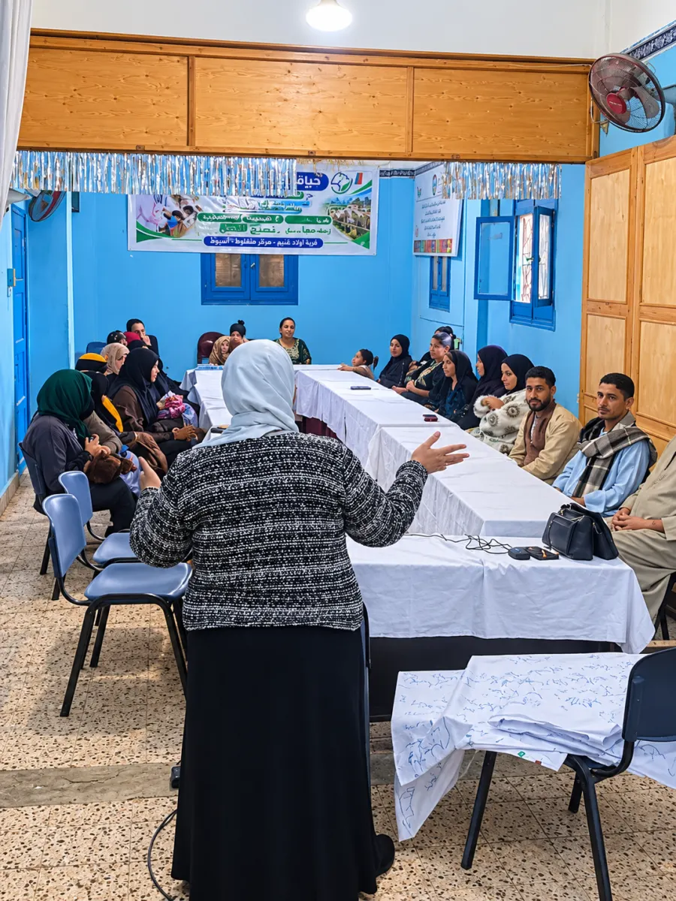
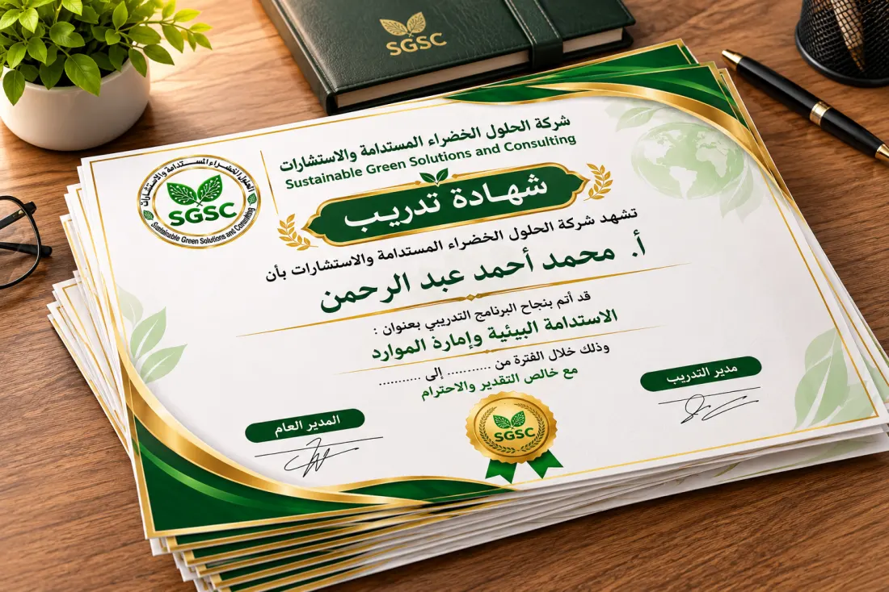
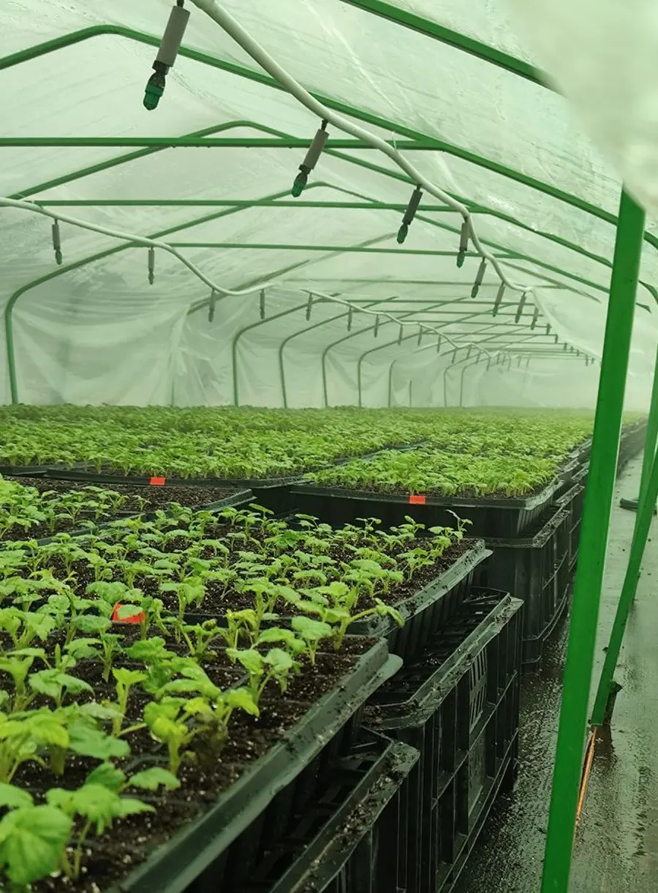
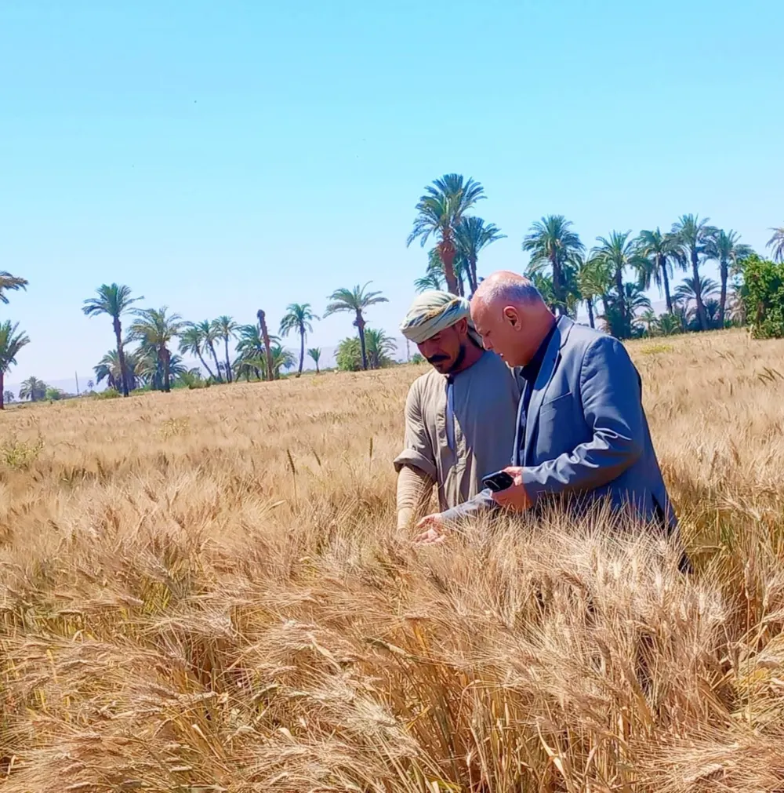

Track Records – خبرات تراكمية وأثر ميداني ملموس
رغم تأسيس الشركة في عام 2025، إلا أنها تعتمد على الخبرات التراكمية الواسعة لفريق عملها من الخبراء والاستشاريين والشركاء في مجالات التنمية والزراعة والإنتاج الحيواني والبيطري والطاقة والتمكين المجتمعي.
المشاريع الزراعية والحيوانية والبيطرية ومشاريع الطاقة الشمسية والمتجددة.
إعداد الاستشارات والدراسات الفنية والاقتصادية المباشرة.
تنفيذ البرامج التدريبية المتقدمة والمشاريع التجريبية والنموذجية (Pilot Projects).
مبادرات تمكين المرأة والشباب وتحسين سبل العيش، مع تركيز ميداني خاص على محافظات صعيد مصر والمحافظات الحدودية.
تأهيل المصانع ومحطات التعبئة والمخازن في مصر للامتثال لمتطلبات سلامة الغذاء والتصدير.


